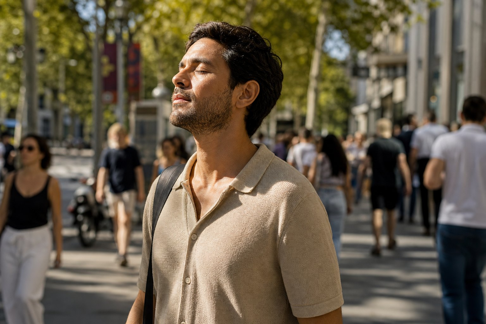
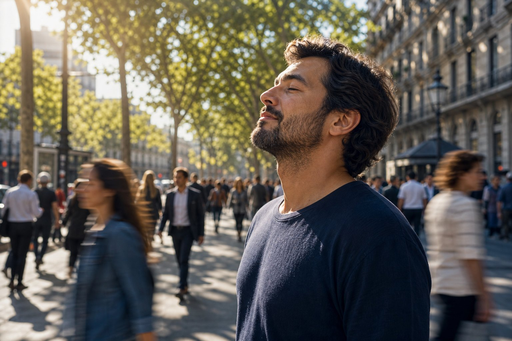

3 conjuntos contrincantes × 3 tomas. Misma emoción, igualdad de condiciones. Elige el que mejor transmite paz — o mezcla para la siguiente versión del entorno creativo.
Ojos cerrados un instante + rayos entre árboles + acera concurrida = paz por contraste con estrés urbano.
2 · Por qué evoca PAZ
El cuerpo en quietud (ojos cerrados) frente a un fondo que se mueve. La luz “protege” al avatar. El espectador lee alivio, no drama.
3 · Referencia semántica
Patrones visuales frecuentes en contenido de mindfulness / morning commute / “slow living” urbano: sol filtrado, shallow DOF, sujeto quieto, multitud desenfocada.
4 · Métrica
Concepción: más identificación → más interacciones. Confirmación: interacciones + conversiones en funnel.
5 · Motores hermanos
PAZ ≠ LIBERACIÓN. Cada uno con su grupo. El mix PAZ×LIBERACIÓN es un motor tercero cuando exista baseline de ambos.
CONJUNTO A
Instante cerrado — Hombre
Paz como pausa interior en medio del flujo. Avatar masculino latino ~35, casual urbano.
Toma 1 · Frontal

Toma 2 · Tres cuartosToma 3 · Perfil + rayos
Un segundo. El tuyo.
En medio del ruido, el cuerpo ya sabe parar.
Prompt maestro (EN)
Photorealistic ad still, 16:9. Medium shot waist-up, Latino man mid-30s centered on crowded Avinguda Diagonal Barcelona sidewalk, 8am summer. Eyes gently closed — one instant of peace/release. Golden sun rays through tree leaves cover his body organically. Busy blurred pedestrians behind = haste vs his calm. Fresh warm air. Natural cinematic, shallow DOF. No text, logos, overlays. Angle: [FRONTAL | THREE-QUARTER | PROFILE slightly low].
CONJUNTO B
Respiro urbano — Mujer
Misma estructura emocional; lectura femenina del instante. Prueba si el nicho se identifica más con este avatar.
Photorealistic ad still, 16:9. Medium shot waist-up, Latina woman early-30s on crowded Diagonal Barcelona sidewalk, 8am summer. Eyes softly closed in peace. Golden morning rays through tree leaves on her body. Blurred rushing pedestrians behind. Fresh warm air. Natural cinematic. No text/logos/overlays. Angle: [FRONTAL | THREE-QUARTER | PROFILE slightly low].
CONJUNTO C
Pausa en el commute
Paz como micro-respiración a mitad del trayecto. Lino claro = ligereza; mismo contraste con la prisa.
Toma 1 · FrontalToma 2 · Tres cuartos

Toma 3 · Perfil + rayos
Entre una cosa y la otra: calma.
No hace falta salir de la ciudad para volver a ti.
Prompt maestro (EN)
Photorealistic ad still, 16:9. Medium shot waist-up, Mediterranean man late-30s in light linen shirt, stopped mid-commute on Diagonal Barcelona sidewalk, 8am summer. Eyes closed for one breath of peace. Soft golden rays through plane-tree leaves. Blurred cyclists/pedestrians = stress vs stillness. Natural cinematic. No text/logos/overlays. Angle: [FRONTAL | THREE-QUARTER | PROFILE slightly low].
¿Qué conjunto representa mejor PAZ para el anuncio?